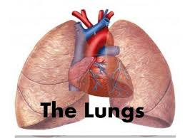

<DOCTYPE HTML>
   <html>
<head>
<meta name="viewport" content="width=device-width, initial-scale=1.0"> 
<title>THE RUNGS</title>
<style>
h2{
     position: absolute;
     bottom: 250px;
     padding: 5px;
     left: 10px;
     
 }
 .tb3{
     position: absolute;
     bottom: 300px;
     padding: 1px;
     left: 10px;
     background-color: greenyellow;
 }
.ida{
     position: absolute;
     bottom: 180px;
     padding: 5px;
     left: 10px;
     background-color: cornflowerblue;
 }
.idb{
     position: absolute;
     bottom: 230px;
     padding: 5px;
     left: 10px;
     background-color: greenyellow;
 }
.idC{
     position: absolute;
     bottom: 200px;
     padding: 5px;
     left: 10px;
     background-color: red;
 }
.idd{ 
   position: absolute;
     bottom: 130px;
     padding: 5px;
     left: 10px;
     background-color: blueviolet;
 }
 
 #demo{
     position: absolute;
     bottom: 320px;
     left: 150px;
     height: 300px;
     width: 300px;
     padding: 50px;
     background-color: teal;
 }
 body{
     background-color: darkolivegreen;
 }


</style>

</head>
<style>
img{
   position: sticky;
   width:500px;
   height:500px;
   padding: 6px;
   left: 600px;
</style>
<body>
      <table class="tb3">  <tr><td>
            <a href = "HOMEPAGE.html"><h4> HOME PAGE</h4></a>
          </td></tr></table><br>
   <h2>THE ANATOMY OF THE RUNGS</h2>
      <table id="demo"></table>
<button class="ida" onclick = "myFunction()">WIND PIPE</button><br>
<button class="idb" onclick = "myfunction()">AIR SUCS</button>
<button class="idc" onclick = "myjunction()"> THE DIAGHRAM</button><br>
<button class="idd" onclick = "myyunction()">SYNOVIAL MEMBRANE</button>
   
   <body
<body>

     


</body>
   <script>

function myFunction(){
var tx = "";
var records = ["the wind pipe links the blood", 
               "circulatory system to the atmospher",
               "thi is prevented from clapse by rins of ", 
               "catriage around it so that we shuold",
               "hava air moving in and out avery time"];
records.forEach(myFunction);
document.getElementById("demo").innerHTML = tx;

function myFunction(value, index, array) {
  tx = tx + value + "<br>"; 
}
}
function myfunction(){
var txt = "";
var text = [" This contains bunch of blood capilaries ", 
            "it is where gas exchange takes place ",
          "where as oxygen enters into the blood while",
            "carbondioxide exits the blood"];
text.forEach(myfunction);
document.getElementById("demo").innerHTML = txt;

function myfunction(value, index, array) {
  txt = txt + value + "<br>"; 
}
}
function myjunction(){
var xp = "";
var doc = ["The diaghram regurates air pressure inside", 
               "the rungs, whe it is lowered the blood pressure",
                "decreases while when it is raised the blood",
                 "increses ",
                 ];
doc.forEach(myjunction);
document.getElementById("demo").innerHTML = xp;

function myjunction(value, index, array) {
  xp = xp + value + "<br>"; 
}
}
function myyunction(){
var tp = "";
var docc = ["synovial membrane produces fluid which", 
            "rubricates the rungs from chest",
                "walls otherwize the since rungs are tender",
                 "they can be clashed during in and out movement",
                 ""];
docc.forEach(myyunction);
document.getElementById("demo").innerHTML = tp;

function myyunction(value, index, array) {
  tp = tp + value + "<br>"; 
}
}


      </script>
   
   
   
   
   
   
   </html>